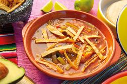
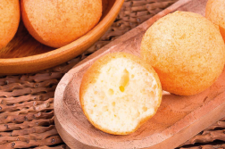
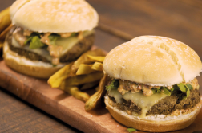

<div class="view view-main">
          <div data-name="nivel" class="page">

<div class="page-content">
<div class="navbar">
               <div class="navbar">
              <a href="/inicio/" class="link back"><i class="back fas fa-arrow-circle-left"></i></a>
          </div>
          </div>
<section class="titulo_descripciones_mac">
<h2><strong>!LO MAS POPULAR!</strong></h2>

</section>

<h2 class="titulos_lomapopu_mac"> _ RECETAS DEL MUNDO</h2>

<section class="filas1_mac">
    <a class="vinculo_fi_mac link" href="/pastabolo/"><div class="columna1_mac">
   
   <p id="text_descr_mac">TAILANDIA</p>
   </div></a>
    <a class="vinculo_fi_mac link" href="/pastabolo/"><div class="columna2_mac">
    
   <p id="text_descr_mac">MEXICO</p>
    </div></a>

</section>

<h2 class="titulos_lomapopu_mac"> _ RECETAS POR OCASIÓN</h2>

<section class="filas1_mac">
    <a class="vinculo_fi_mac link" href="/rosca/"><div class="columna1_mac">
   
   <p id="text_descr_mac">BUÑUELO COLOMBIANO</p>
   </div></a>
    <a class="vinculo_fi_mac link" href="/rosca/"><div class="columna2_mac">
    
   <p id="text_descr_mac">ROSCA DE REYES</p>
    </div></a>

</section>

<h2 class="titulos_lomapopu_mac"> _ RECETAS VEGETARIANAS</h2>

<section class="filas1_mac">
    <a class="vinculo_fi_mac link" href="/hamburguesa/"><div class="columna1_mac">
   
   <p id="text_descr_mac">HAMBURGUESA DE LENTEJAS</p>
   </div></a>
    <a class="vinculo_fi_mac link" href="/hamburguesa/"><div class="columna2_mac">
    
   <p id="text_descr_mac">PIZZA VEGETARIANA</p>
    </div></a>

</section>

<h2 class="titulos_lomapopu_mac">_ RECETAS POR PRODUCTO</h2>

<section class="filas1_mac">
    <a class="vinculo_fi_mac link" href="/arco/"><div class="columna1_mac">
   
   <p id="text_descr_mac">ARROZ CON POLLO</p>
   </div></a>
     <a class="vinculo_fi_mac link" href="/arco/"><div class="columna2_mac">
    
   <p id="text_descr_mac">POLLO AL CURRY</p>
    </div></a>

</section>
<h2 class="titulos_lomapopu_mac">_ REPOSTERIA</h2>

<section class="filas1_mac">
    <a class="vinculo_fi_mac link" href="/cupcake/"><div class="columna1_mac">
   
   <p id="text_descr_mac">CUPCAKE CHOCOLATE</p>
   </div></a>
    <a class="vinculo_fi_mac link" href="/cupcake/"><div class="columna2_mac">
    
   <p id="text_descr_mac">CANNOLI</p>
    </div></a>

</section>
              </div>
    </div>
</div>
